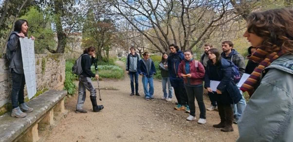

Le plus ancien jardin botanique de France, fondé en 1593. Un lieu vivant où la science rencontre le grand public, et où nos étudiants apprennent la botanique et l'architecture végétale, tout en apprenant à diffuser leurs savoirs.
The oldest botanical garden in France, founded in 1593. A living place where science meets the public, and where our students learn botany and plant architecture, while also learning to share their knowledge.
Fondé en 1593 par le roi Henri IV sur l'initiative du médecin Pierre Richer de Belleval, le Jardin des Plantes de Montpellier est le plus ancien jardin botanique de France encore en activité. Conçu à l'origine pour la culture de plantes médicinales destinées à l'enseignement de la médecine, il a progressivement évolué pour devenir un espace scientifique, pédagogique et culturel ouvert à tous.

🌿
photo_jdp_1.jpg
'">
Vue générale du Jardin des Plantes de Montpellier
Classé monument historique, il accueille aujourd'hui des collections botaniques exceptionnelles : plantes méditerranéennes, tropicales et alpines, et constitue un lieu de recherche, d'enseignement et de promenade pour les habitants de Montpellier et ses visiteurs.
Enseignement & projet européen
Une L3 Biologie-Écologie qui dépasse les murs de l'université
Dans le cadre de la Licence Biologie-Écologie de l'Université de Montpellier, les étudiants de L3 suivent l'UE d'Architecture Végétale. Ils y apprennent par la recherche et par problème, en choisissant librement leur angle scientifique : conservation des espèces, écologie urbaine, One Health ou biogéographie.
Les meilleurs travaux étudiants prennent une forme concrète et durable grâce au projet SEED-ED, financé par CHARM-EU, une alliance interuniversitaire européenne. Ce financement permet la production et l'installation de panneaux physiques multilingues, exposés en permanence au Jardin des Plantes de Montpellier.
Chaque panneau est le fruit d'un travail de recherche original. Les étudiants choisissent une espèce présente dans le jardin, formulent une problématique scientifique, conduisent leur analyse et rédigent un contenu accessible au grand public en trois langues.
Le panneau physique est installé à proximité de l'espèce. Les versions numériques, accompagnées du rapport de recherche déposé sur HAL, sont accessibles via QR code.
Étudiants en travaux pratiques au Jardin des Plantes
Science ouverte
Des savoirs accessibles en trois langues
Chaque panneau est disponible en français, en anglais et en chinois, trois langues choisies pour refléter la diversité des visiteurs du jardin et la vocation internationale de la recherche. Le contenu scientifique est adapté pour être compréhensible par tous, sans sacrifier la rigueur.
Les rapports de recherche associés à chaque panneau sont déposés sur la plateforme HAL, archive ouverte nationale, et reçoivent un identifiant DOI permanent. Ils sont accessibles librement, en complément du panneau, pour les lecteurs souhaitant approfondir le sujet.
Ce dispositif fait du Jardin des Plantes un espace de diffusion scientifique vivant, où chaque visite peut devenir une expérience d'apprentissage, pour les promeneurs comme pour les chercheurs.
Accès numérique via QR code
The place
The oldest botanical garden in France
Founded in 1593 by King Henry IV on the initiative of physician Pierre Richer de Belleval, the Jardin des Plantes de Montpellier is the oldest botanical garden in France still in operation. Originally designed for the cultivation of medicinal plants for medical education, it has progressively evolved into a scientific, educational and cultural space open to all.
🌿
photo_jdp_1.jpg
'">
General view of the Jardin des Plantes de Montpellier
Listed as a historic monument, it now hosts exceptional botanical collections: Mediterranean, tropical and alpine plants, serving as a place of research, teaching and leisure for the people of Montpellier and its visitors.
Teaching & European project
A Biology-Ecology Bachelor's that goes beyond the classroom
Within the Biology-Ecology Bachelor's programme at the University of Montpellier, third-year students take the Plant Architecture course. They learn through research and problem-based approaches, freely choosing their own scientific angle: species conservation, urban ecology, One Health or biogeography.
The best student projects take a concrete and lasting form through the SEED-ED project, funded by CHARM-EU, a European interuniversity alliance. This funding supports the production and installation of physical multilingual panels, permanently displayed at the Jardin des Plantes de Montpellier.
Each panel is the result of original research. Students choose a species present in the garden, formulate a scientific question, conduct their analysis and write content accessible to the general public in three languages.
The physical panel is installed near the species. Digital versions, along with the research report deposited on HAL, are accessible via QR code.
Students during field work at the Jardin des Plantes
Open science
Knowledge accessible in three languages
Each panel is available in French, English and Chinese, three languages chosen to reflect the diversity of the garden's visitors and the international nature of research. The scientific content is adapted to be understandable by all, without sacrificing rigour.
The research reports associated with each panel are deposited on the HAL platform, France's national open archive, and receive a permanent DOI identifier. They are freely accessible, alongside the panel, for readers wishing to explore the topic further.
This system turns the Jardin des Plantes into a living scientific dissemination space, where every visit can become a learning experience, for strollers and researchers alike.